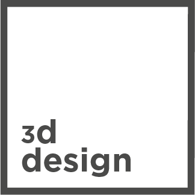

This badge certifies that you know how model in 3d on tinkercad and share your design on Thingiverse.
This badge certifies that you have followed and validated the introduction to 3d design available here.
This badge finally certifies that you have been to a makers' lab emlyon or a fablab.